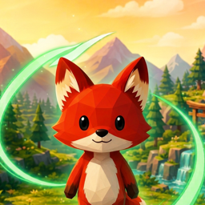

A one-person studio making handcrafted mobile games — art, code and design under the same roof.

An isometric action adventure inspired by Japanese folklore. Surround what is corrupted with your magic trail and restore the forest's balance.